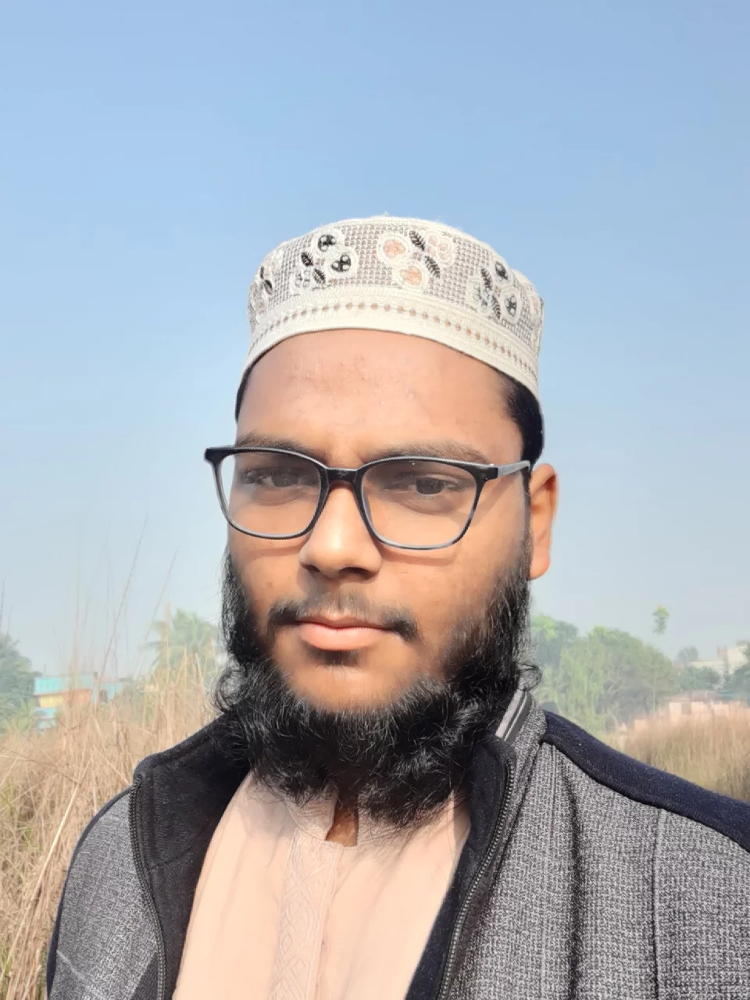

Curriculum Vatae

Language: Bangla,English,hindi
Computer: Word, Excel, Power Point
| Exam name | Institute | Subject | Result | Passing year |
|---|---|---|---|---|
| SSC | Gawsia alim madrasah | Science | 4.33 | 2018 |
| HSC | Ta'mirul Millat Kamil Madrasah | Science | 4.33 | 2020 |
| B.SC | DU | CSE | 3.85 | 2025 |
Dhaka University Library Website Address DU Library Home Page DU Institutional Repository Introduction / Background: The Dhaka University Library started as a part of the Dhaka University on the 1st of July, 1921 with 18,000 books inherited from the libraries of the former Dhaka College and Dhaka Law College. F.C. Turner, the former principal of Dhaka College was the first librarian of the Dhaka University Library and Fakhruddin Ahmed succeeded him in the post in 1922. At present the Dhaka University Library has 6 lacs 80 thousand books and magazines. Besides that the Library has 30,000 rare manuscript
More images Virtual work experience A virtual work experience program is an online course that simulates what you would do at a company if you worked there day-to-day. These programs include cases of the actual tasks a professional would do with real customers and clients.
Cricket, Wrestling, Tour